WP RESIDENCE - REAL ESTATE WORDPRESS THEME
by WP Estate - http://wpestate.org/
- created: June 9 2014
- latest update: February 10, 2015
- by: WP Estate - http://wpestate.org/
- email: annapx0909@gmail.com
- help url live: http://help.wpresidence.net/
- support system (private): http://support.wpestate.org/
Thank you for purchasing my theme. If you have any questions that are beyond the scope of this help file, please feel free to email us through our Support Ticket. Thanks so much!
A) HTML Structure
This theme is a responsive layout with one column for sidebar. All of the information within the main content area is nested within a div with an id of "post". The sidebar's content is within a div with an id of "primary". The general template structure is the same throughout the template.
The header is contained in a header element with the class "master_header" while the footer is in a footer element with the id="colophon".
If you would like to edit the color, font, or style of any elements in one of these columns, you would do the following:
#primary a {
color: #someColor;
}
To ensure that your new styles are applied, make sure that they carry enough "weight" and that there isn't a style lower in the CSS file that is being applied after yours.Use tools like Firefox Firebug or Developer tools in Chrome to identify the id and class of the elements and see if your changes are working.
B) CSS Files and Structure
We are using several CSS files in this theme. The first one is the style.css with has a generic css reset.Almoust all styling is in this file. The file is separated into sections using
/* =Single -------------------------------------------------------------------*/ some code /* =property -------------------------------------------------------------------*/ some code etc, etc.
If you would like to edit a specific section of the site, simply find the appropriate label in the CSS file, and then scroll down until you find the appropriate style that needs to be edited.
The second most important file is the my_media.css which contain media queries and css alterations in order to achive the theme responsivness.
In the style.css there also included the botstrap css files.
The theme also let you modify the visual aspects of his elements. You can do that via the the theme options menu. All the changes you made here will be saved into database and transformed in a css file in customcss.php
In theme options there is a custom field called custom.css. You can paste any css file alteration in there and it will be applyed to the front site.
C) JavaScript
This theme imports several Javascript files.
- jQuery
- My custom scripts
- Some plugins
- jQuery is a Javascript library that greatly reduces the amount of code that you must write.
- The javascript code (except the google maps code) is found in 2 main files : control.js ,ajaxcalls.js and property.js . The ajaxcalls.js containt actions related to ajax calls. The property.js is containing actions and animations only for property page while control.js is covering the whole site. The google map code is found in google_map_code_contact.js for contact template page, google_map_code_listing.js for property page and google_map_code.js for the rest of the files.
- There are several plugins inported. We use Modernizer for detecting browser resolution, prettyphoto for picture display and imagesloaded for handling image loading.
D) Sources and Credits
I've used the following images, icons or other files as listed:
- Bootstrap FrameWork
- Colorpicker
- PrettyPhoto
- Google Maps API 3
- Images are free for personal and commercial use from http://morguefile.com/
- Listing icons are free from commercial and personal use, from http://thenounproject.com/
- Some of the photos used on the homepages demos are free: to Share — to copy, distribute and transmit the work to Remix — to adapt the work to make commercial use of the work, Under the following conditions: Attribution — You must attribute the work in the manner specified by the author or licensor (but not in any way that suggests that they endorse you or your use of the work). Author: Mirage Floors, photos from FLICKR
E) PHP Code Explanation
All theme files call a sidebar orientation function in the begining. The function is called 'page_details' , is defined in functions.php and return an array with custom values for that particular page. It can have information about sidebar orientation, content width or other useful classes.
There also several custom post defined. These custom posts are memebership packages defined in libs/memebership.php,invoices defined in libs/invoices.php, are agent defined in libs/agents.php and property defined in property.php. For agent and property custom post types there is a "single" page that show the content for one of these entries. The files are single-estate_agent.php for agent and single-estate_property.php for property.
These 2 custom post type have also a "listing" template. To agent list is in the agent_list.php file while the property list is in property_list.php . Since the property custom post type has several taxonimies there is also a taxonomy file called taxonomy.php
The file for admin are libs/theme-admin.php. All the widgets are defined in the folder libs/widgets.
F) Default .PNG Images
The original theme images (including default pins) are in the demo_content folder, included in the theme pack downloaded from Theme Forest after purchase. Images can be edited in programs like Fireworks, and replaced in the theme via FTP Manager.
G) WP Residence Installation & Features Explained - video tutorial to install the theme https://www.youtube.com/watch?v=paLIfipA3b0#t=122 and video tutorial to update the theme - https://www.youtube.com/watch?v=glLmo9J3rgs
Theme Installation
First of all make sure you have a valid WordPress installation. Here's a tutorial for how to do that http://codex.wordpress.org/Installing_WordPress#Famous_5-Minute_Install. Next you can upload the theme with one of these 2 methods:FTP method:
- Unzip the theme pack from Theme Forest.
- Upload the folder wpresidence contents to the wp-content/themes folder on your server - via FTP Manager
- Activate the theme in the Appearance / Themes menu in WordPress Admin.
- Open the WPRESIDENCE Options and set up theme options.
WordPress method:
- Extract package downloaded from ThemeForest.
- Find for wpresidence.zip.
- Upload ONLY wpresidence.zip from Appeareance / Themes / Install Themes uploader
- Activate the theme
After you activate the theme please follow these steps in order to setup your site and get started.
- Import content demo content. (optional, not recommended if you already have your own content).
- Go to Admin- Theme Options - Google Maps and fill in the landing address for Google Maps. To find out Latitude and Longitude for Google Maps, starting point go to Google Maps, find your location, click right on the location on the map and click “What’s here”. Coordinates will show in the search bar on top.
- Optional. Set Google Api Key (the link to the documentation for how to generate your own Google Maps API Key: https://developers.google.com/maps/documentation/javascript/tutorial#api_key ).
- Set the rest of general settings for your website: Currency Symbol, Where to show currency symbol and Measurement unit.
- If you imported the demo content go to Appearance - Menus and set/save the Main Menu. If you haven’t imported content, from Appearance - Menus create your own menu and save it as Primary Menu.
- Add some Widgets on sidebars (*footer sidebars also) from Appearance - Widgets.
- Go to Theme Options > Social & Contact and fill in the form with your contact data.
Demo Content - video tutorial https://www.youtube.com/watch?v=paLIfipA3b0#t=122
IMPORTANT: After demo content is imported, go to Themes – activate an older theme then activate WP RESIDENCE again. Properties in demo have been added before making some of the newest WP RESIDENCE features. This is required for properties imported to show in new installs correctly.
If you want to import the demo content (the one that you see on wpresidence.net/), you can import the XML located in the demo_content folder. For that go to Tools -> Import and activate & use the WordPress Imported.
What is not imported and you have to add after demo is completed: sidebars, widgets to sidebars and footer, condo, villa and duplex icons, revolution sliders.
If you site is already in production we DON'T RECOMMEND to import the demo content.
The demo content file is large because we offer all the images in the demo. Your hosting may have a speed/file size limit which will affect the import demo content process. The solution is to repeat the IMPORT operation until all content is added to your website.
READ ME NOTES:
---------1. Import separately post, pages, agents
If you choose to import only post, pages or agents from demo, you will import only text (not images). If you need images,
import full demo (please note you need a good hosting service to upload all content at once)
--------- 2. Import full content
Note that this file is large because we include all images from the demo, which are in high resolution. If during the import you receive an error from the server, it means you're hosting is limiting the size or the upload speed of your account.
In this case, try to repeat the import several times, until all content si live.
--------- 3. How to import
Go to Tools - Import and activate the Import Plugin
Select the files you wish to import from demo_content folder
Wait until you get the "All done. Have Fun!" Message
--------- 4. What to do after import
Go to Appearance - Menus - Select "Footer" menu as Footer Menu
From the same Menus - select Main Menu and save it as Primary Menu.
Go to Revolution slider and import the 2 slides (see below):
Install & Activate Revolution Slider
Add Slider Name "shortocode", alias "shortcode"
Save
Edit Slider - click import - upload the shortcode.xml
Import
Save
Add slider Name "demo", alias "demo"
Save
Edit Slider - click import - select the demo.xml
Import
Save
Install and Activate Visual Composer. Go to Visual Composer settings and follow
these instructions http://help.wpresidence.net/#!/visual
Go to Theme Options - Theme Slider and Select properties that show in the slider.
Featured images for these Theme Slider are 1920px wide.
--------- 5. Sidebar, Footer and Area widgets - are not imported.
Create your own sidebars with available widgets
Edit pages and assign sidebar created.
Edit footer widgets.
Edit header widgets
Help to know how you can update/edit this is here http://help.wpresidence.net/#!/sidebars, http://help.wpresidence.net/#!/footer,http://help.wpresidence.net/#!/header_widgets )
----------6. Enable the user menu and enable the login menu (it’s controlled from appearance http://help.wpresidence.net/#!/app)
-----------7 Set the theme slider – http://help.wpresidence.net/#!/propertyslider
-----------8. Set visual composer for agent, property,post – http://help.wpresidence.net/#!/visual
-----------9. Save Footer and Primary menus – http://help.wpresidence.net/#!/menu,http://help.wpresidence.net/#!/footer_menu
-----------10. Add HH columns plugin to see your wordpress Ids and updated the recent items shortcode IDs on homepage (help http://help.wpresidence.net/#!/recent_items)
------------11. Ccreate your own API for Facebook (http://help.wpresidence.net/#!/facebook1 , link to create app https://developers.facebook.com/)
and Google (http://help.wpresidence.net/#!/google) and add in theme options
-
------------12. Ccreate PayPal API based on your account - http://help.wpresidence.net/#!/freesubmission
- fill in other data in theme options - http://help.wpresidence.net/#!/theme_options
How to update the theme and plugins
Theme updates should be done via FTP if you have a translation file done.
Video Tutorial for update the theme - http://wpestate.org/update-wp-residence-via-ftp-via-wp-admin/
All paid plugins offered with the theme for free must be updated through us. Here are the options:
Option 1: with theme update
1. Update the theme – video tutorial http://wpestate.org/update-wp-residence-via-ftp-via-wp-admin/
3. For Visual Composer – via FTP go to wp-content/plugins/js_composer and delete the entire folder
For Revolution Slider – via FTP go to wp-content/plugins/revslider and delete the entire folder
For Ultimate Add-ons - via FTP go to wp-content/plugins/Ultimate_VC_Addons and delete the entire folder
4. Go to wp-admin and install the plugin again via the notice in header.
Option 2 – without theme update
1. Update the js_composer.zip via FTP by copying the js_composer.zip file from latest theme update (after you donwload it) included in wpresidence/libs/plugins folder
Update the revslider.zip via FTP by copying the revslider.zip file from latest theme update (after you donwload it) included in wpresidence/libs/plugins folder
3. Via FTP go to wp-content/plugins/js_composer and delete the entire folder
Via FTP go to wp-content/plugins/revslider and delete the entire folder
For Ultimate Add-ons - via FTP go to wp-content/plugins/Ultimate_VC_Addons and delete the entire folder
4. Go to wp-admin and install the plugin again via the notice in header.
Option 3 – get the latest zip from us
1. Open a support ticket here – http://support.wpestate.org/ and ask us for the latest visual composer plugin or latest revolution slider plugin
3. Via FTP go to wp-content/plugins/js_composer and delete the entire folder
Via FTP go to wp-content/plugins/revslider and delete the entire folder
For Ultimate Add-ons - via FTP go to wp-content/plugins/Ultimate_VC_Addons and delete the entire folder
4. Go to wp-admin – plugins – add new plugin and install the zip file we email you
Homepage - Video Tutorial youtube.com
Homepages are built with the regular WordPress page and a combination of shortcodes as content. You can create unlimited pages and select any of them as you homepage.
To create a new page go to Admin -> Pages -> Add New Page -> Add content and click Publish when you’re done. Make sure that Default Template is selected in the Page Attributes panel.
After you create the new page, go to Settings -> Reading and check the static page option as "Front page displays".Then select the name of the page you’ve already created and hit save.
Here are the homepage demo content in TEXT mode, built with Visual Composer and WP Residence shortcodes
Homepage V1
Homepage V2
Homepage V3
Homepage V4
Homepage V5
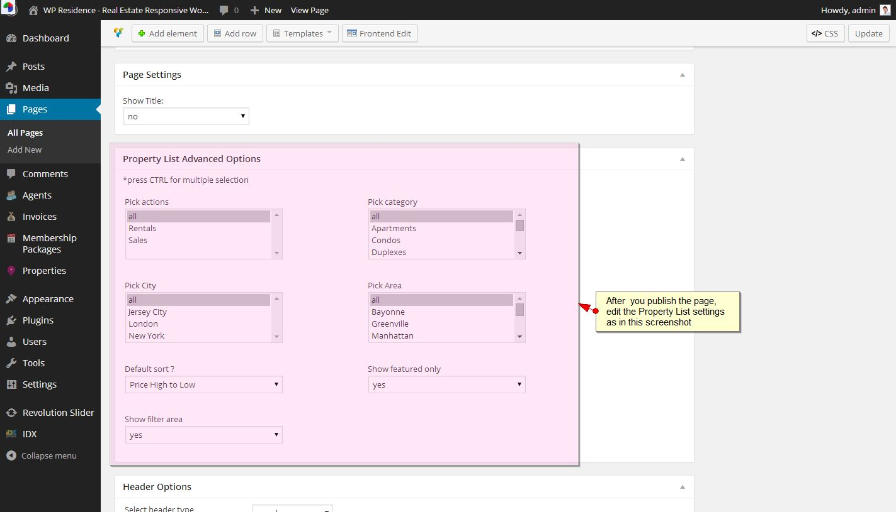
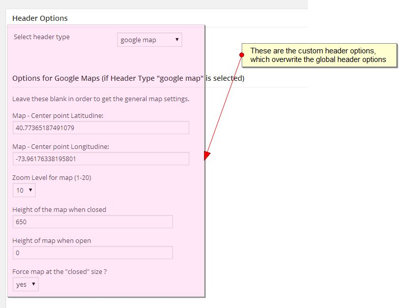
Global header options
For homepage and any other page and post created in WP RESIDENCE
Global Header options - Map Force at closed height doesn't apply for Property Page since the infobox must open automatically on landing page.
The global header is selected from Theme Options - Appearance
If you select Google Map, the global options are set in Theme Options - Google Maps Settings:
Custom header options for Homepage and any other page or post in the theme:
Google Maps, Revolution Slider, Theme Slider, Image, or no header.
Go to Edit Page - Header Options and follow the instructions below
Create a Revolution Slider in the REVOLUTION SLIDER menu. For more details - see also Revolution Slider manual http://themepunch.com/codecanyon/revolution_wp/documentation/
Menu
WP Estate supports one menu with multiple dropdown menus (up to 5 but we recommend to use 2, 3 the most so that it's easy to navigate).
To create the menu go to Appearance -> Menu. Create a new menu and add the links using the panels listed on the left.
When the menu is ready go to Manage Locations. Select Primary Menu and Click “SAVE”.
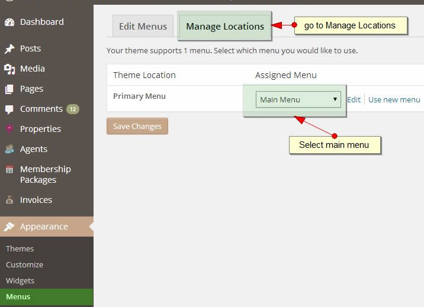
How to Edit the Menu.
How to add Categories, Areas, Actions and Cities list pages to menu.
How to make sub-menus open on ipads - create link menus and add # for the link. The add sub-menu items and save.
The menu can be organized in sub-levels (you can add 2, 3, 4 or 5 level menus). Arrange the order in Admin panel with drag & drop and Click 'Save' when you're done.
Footer Menu
Video Tutorial - https://www.youtube.com/watch?v=y95QEFfNdZo&list=PLEQZUYyA_PUktUczt5m8R4f2WMIE33pW3&index=6
To create the menu go to Appearance -> Menu. Create a new menu and add the links using the panels listed on the left.
Sidebars
Video tutorial https://www.youtube.com/watch?v=M6gEIkCeEAA&list=PLEQZUYyA_PUktUczt5m8R4f2WMIE33pW3&index=7
By default, WP Estate comes with six sidebar options: "Primary Widget Area","Secondary Widget Area", "First Footer Widget Area", "Second Footer Widget Area", "Third Footer Widget Area" and "Fourth Footer Widget Area.
The "Primary" and "Secondary" are for the regular sidebars while the rest apply for the 4 footer columns.
Additional to the “Primary” and “Secondary” sidebars you can create unlimited sidebars and assign them to individual pages or posts. To create a NEW sidebar go to Appearance > Sidebars and use the "+ Add Sidebar" link.
Then go to Appearance -> Widgets and populate the sidebar with the Widgets Available.
Use Drag and Drop to re-order widgets on sidebar.
Custom Blog Post Settings
Video Tutorial
3.6 Agent Post Settings
“Agents” is a custom post template that has a separate menu in Admin Panel. To add a new Agent go to Agents -> Add New -> Add description in the main editor -> Fill In the Agent Settings -> Upload Featured Image-> Click Publish.
Custom Agent Page settings are:
Property Post Settings
Video Tutorials:
How to add a Property from admin
How to add/edit images for properties in admin area
How to add properties to users
How to create a new category/action/area/state or city and add the link to menu
IMPORTANT
- Price (numbers) *Don’t add commas. The theme adds them automatically! Currency is selected from Admin - Theme Options - General Settings.
- *Size (numbers) *Don’t add commas. The theme adds them automatically! * The measurement system is selected from Admin - Theme Options - General settings.
- *Lot Size (numbers) *Don’t add commas. The theme adds them automatically! * The measurement system is selected from Admin - Theme Options - General settings.
You can change camera view if Street View is enabled. Values for Google Street Camera are selected from 0 to 360:

Images. How to add images to Property Page slider
IMAGE SIZE REQUIREMENTS
- Property slider images with sidebar should be min 810 px width
- Property slider images without sidebar should be minim 1110 px width
- Property featured image should be the same size, minim 500px to fit in the infobox
Image re-size rules are set in general_settings.php
New in 1.06 - Add Floor Plan and Add PDF
Admin settings to add floor plans:
Admin settings to add PDF:
Property - How to set Agent info and Contact on Sidebar
Property Custom Taxonomies: Category, Action, City and Area
+ Counties/States added in v 1.07
Video Tutorialhttp://wpestate.org/wp-residence-create-taxonomy-page-add-main-menu/
Video Tutorial for Counties/States http://wpestate.org/wp-residence-1-07-manage-new-taxonomy-statecountry-3rd-dropdown/
How to Add Custom Taxonomies
How to Edit, View, Delete Custom Taxonomies
From the Admin - Properties - City. you add/delete/edit cities that you want to attach to your properties. Repeat for all custom taxonomies available.
To add add Neighborhood to City
From the Neighborhood panel you add Neighborhood / Area for your properties. You can add/edit/remove them from Admin - Properties - Neighborhood / Area. Neighborhood will display in Property Details, search and front end submission form.
ATTACH AREA TO A CITY and when users select a City, only areas for the city selected show..
WP Residence - V 1.07 - Custom Taxonomy for Counties/States
Starting v1.07 we summed Counties/States into 1 field, whch is now a Custom Taxonomy.
If you update from an older theme version, you must edit and add State/County for each property again. Previous States/Counties will not show anymore in properties.
Related Posts and Listings
Related Listings on Property Page display the last 3 published listings from the same category, action and city.
Related Articles on Blog Post display the last 3 post with the same Tag.
Contact 7 for Contact Forms
First install Contact 7 plugin - https://wordpress.org/plugins/contact-form-7/
Then set-up the contact form you wish and the fields you wish in the plugin settings. You have a lot of options.
Contact 7 Help - http://contactform7.com/docs/
Copy the Contact 7 contact form shortcode in Admin - Theme Options - Social and Contact:
The 2nd email set in Admin - Social and Settings will not receive duplicate emails sent through Contact 7 Forms.
Custom Page Templates
Custom page templates are listed in Admin Panel -> Pages -> Add New/Edit Page -> Page Attribute -> Template.
Default Template
How to remove comments on the default page.
Advanced Search Results
You already receive one Advance Search page when you install the theme. You don’t need to create another one. Just go to Pages - Edit Page and edit settings.
Permalinks must be set to custom starting v 1.08 in order for the "Search" button to redirect to Advanced Search Results page.
Properties Search in our theme has several options controlled from Theme Options - Advanced Search Custom
Agent List
The page will list all agents you publish on the blog. Agent List page has pagination. The theme is set to show 10 agents on each page.
Make Registered Users Agents
Users must register through front end - register form in order to be created as agents automatically.
New registered users/agents will show under Agents:
Blog List Page
The are 2 layouts available:
ComparePage
Up to 4 Properties can be compared at one time.
Contact Page
Properties List Page
You select the number of properties listed on one page in Admin – Theme Options - Appearance.
Create a property list page in 2 steps:
Step 1: Select Template
Step 2: Complete page settings
New in V1.09 - a 2nd template for properties list page
Remember that this page needs header Google Maps. If you don't have this header set as global, then make sure page header is set to google maps and you type in lat and long coordinates.
How to create the page:
This new template does not support custom sidebar or header options . Design is half map + half properties and search filters:
The map will start with all properties pins
You can select what properties to list by default from Advanced settings.
Show filter options YES/NO do not apply.
IDX Page
IDX page will take the global header setting you apply in Theme Options (see global header setting).
Use this template if you activate a third party IDX plugin, such as dsIDXPress.
User Dashboard Pages
Starting V 1.04 - if you don't
have pages with My Properties and Submit Property custom page templates, they don't show in User Menu. So simply delete these if you don't need them.
Starting V 1.06 - People will need to agree to TERMS AND CONDITIONS before register.
How to Create Terms and Conditions Page
To use the User Dashboard, you must create the user dashboard pages, by following the below steps:
How to Create My Profile page

How to Create My Properties page
How to Create Add Property submission form
Front End Submission can have google maps auto-complete for address or you can use the classic dropdowns. This option is controlled from General Settings starting v 1.08
How Front End Submission Fields work in User Dashboard (with no auto-complete)
How the submission will look if you have the auto-complete enabled
Video Tutorial: https://www.youtube.com/watch?v=6XKMm51z7Yk
Address, City, Area, State, Zip - now auto-fill with Google Maps Address
New in 1.06 - Add PDF in Front End Submission
Video Tutorial - Add PDF
New in 1.06 - Add Floor Plans
Video Tutorial - Add Floor Plan
How Front End Floor Plan works in User Dashboard
This is how floor plans look in front end
For users to see their saved favorites properties, create the Save Favorites page:
Save Favorites
If you want to let people just save favorites, you must make sure people have the user dashboard pages MY PROFILE and MY FAVORITES and MY SAVED SEARCHES (if you enabled that)
See User Dashboard Pages chapter.
You must also make sure people can register by enabling the register option in WordPress settings.
Save SEARCH and Email Alert - starting v 1.05
1. Admin creates the page for displaying saved searches in user dashboard (http://help.wpresidence.net/#!/savesearch)
Create Saved Search page
2. Admin sets in theme options if new properties that match saved searches should be emailed daily or weekely
3. User must login
4. User searches and clicks "Search Properties""
5. On advanced search results page he has the input to give a name to his search parameters and save
6. Search is saved and user can delete from user dashboard - my saved searches
7. User gets an email daily or weekly ONLY IF new properties matching his saved searched are published.
Payment Processor
Video Tutorial to set-up PayPal - https://www.youtube.com/watch?v=7jHBKwzYHMs&index=3&list=PLEQZUYyA_PUktUczt5m8R4f2WMIE33pW3
Zillow Estimate
The widget works based on Zillow API. Results are returned from Zillow.
Go to this URL to take you Zillow API Key - https://www.zillow.com/webservice/Registration.htm
The Zillow results page is created from Admin - Pages - New Page - Template - Zillow - Save
Zillow requires an API key which you insert in Admin - Appearance - Zillow API Key
Last step is to go and add the Zillow Widget to any sidebar.
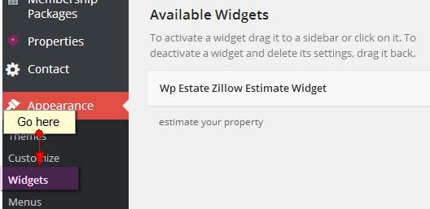
WPRESIDENCE Shortcodes
Icon Content Box
Icon Content Box features an image that displays in its original size, title, text, hover efect (yes/no) and link.You'll recognize it by this icon .
Recent Items
Use HH Columns plugin to see Ids in lists easier - https://wordpress.org/plugins/hh-sortable/
For Recent Articles you can specify Category ID(s).
For Properties you can specify Category Id(s), Action Id(s), Area Id(s), Citi Id(s) in any combination you wish:
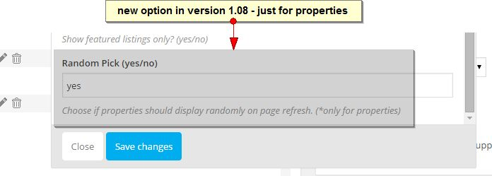

Recent Items Slider
Use only one recent items slider shortcode per page.
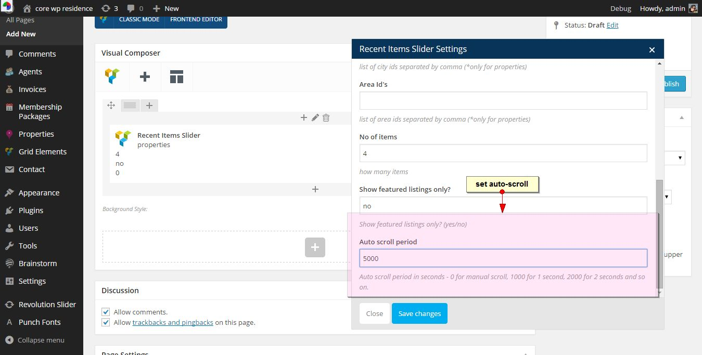
Lists
Use Visual Composer to add lists. Follow these steps:
Testimonials

Featured Article
Featured Property
Featured Agent
Spacer
Advanced Search Shortcode

Login & Register Shortcode
In Front End - NEW in 1.06 users will need to agree to terms and conditions to register:
Font Awesome
Visual Composer
Some WP RESIDENCE elements have a unique respnsive design starting resolution 768 px. You must complete the below settings for these CSS elements to apply. Please see below:
We have added Custom CSS and colors for these default Visual Composer elements:
- tabs
- buttons (large size)
- FAQ
- Tour Sections
- Accordion
- Call to Action Button background color:
Other customizations to the Visual Composer shortcodes can be done by you following the Visual Compose help.
For more info about the shortcodes and settings included in this plugin, please see Visual Composer HELP URL - http://kb.wpbakery.com/index.php?title=Visual_Composer
Visual Composer Youtube channel - https://www.youtube.com/channel/UC8VqUAlmHoMs85jalFRv_mQ
Visual Composer video tutorials:
http://vc.wpbakery.com/video-academy/
Ultimate Addons for Visual Composer - Free plugin included (*17 value)
We purchased the extended license for this plugin. - http://codecanyon.net/item/ultimate-addons-for-visual-composer/6892199
You receive it for free and all updates will be done with wpresidence theme updates.
You will be notified to update the plugin once you install or update to version 1.091. You can install/activate and start using it right away.
This is a third party plugin. Issues related to the plugin can be forwarded to the developer https://www.brainstormforce.com/support/?envato_item_id=6892199 and if you need the extended license code from us, please contact us through our support - http://support.wpestate.org/
Help links to get you started using all these plugins features:
Video tutorials : https://www.youtube.com/user/TheBrainstormForce/videos
Help - is in the help/ultimate addons help folder inside the theme pack
Demo site -https://www.brainstormforce.com/demos/ultimate/
NOTE: we have received a copy of the full demo and included it in help/ultimate addons help folder inside the theme pack. Install but please note you must use these elements keeping in mind our pages have sidebar (and you must edit all demo pages to have no sidebar).
Visual Composer - Full Width Container
Type this EXTRA CLASS name in Visual Composer Row Settings to enable the full width container CSS:
Widgets
WP Estate Social Links
With this widget all the important social accounts where you're active can be shown on sidebar or in the footer. You can add information about the following URLs: RSS, Facebook, Twitter, Dribble, Google+, Linkedin, Blogger, Tumblr, Pinterest, Yahoo, Deviantart, YouTube or Vimeo.
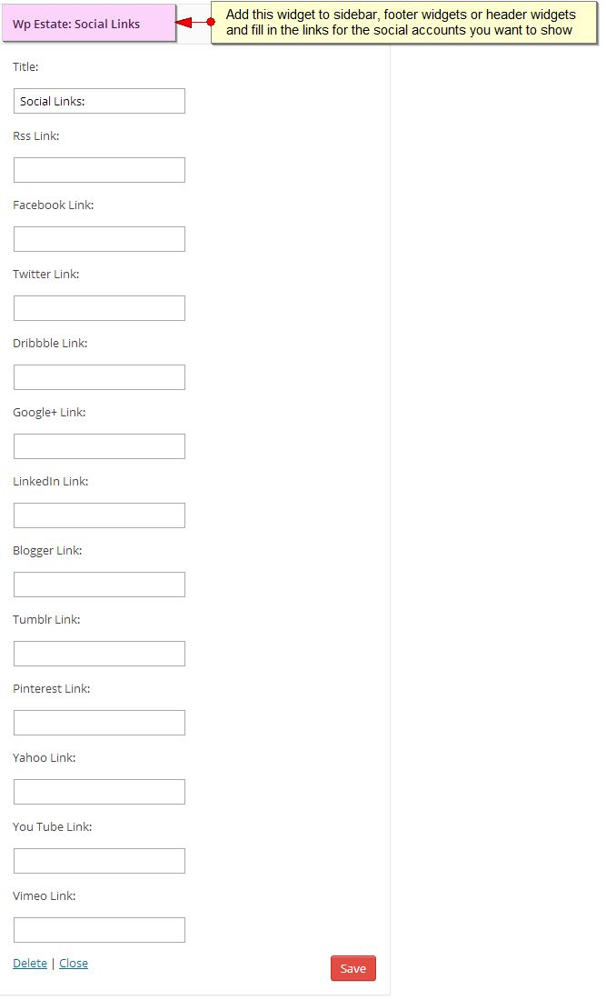
WP Estate Contact
WP Estate Contact widget allows you to share important information your readers need to know so they get in touch easily, such as: Address, Phone, Fax, Email, Skype ID and Web Page URL.
WP Estate Featured Listing
In this widget you have to type the Property ID you’d like to show and a second line. The Property ID is taken from the URL of the Property Page in Admin - Agents - Edit Property.
EX: In this URL http://http://wpresidence.net//wp-admin/post.php?post=90&action=edit the property ID is 90.
WP Estate Facebook Box
The WP Estate Facebook widget shows fans, stream and the Facebook header of your page, without having to look for any other detail elsewhere. You add your Facebook URL in the widget, click save and it's done!
WP Estate Mortgage
The mortgage calculator is created by us following the an example used in real estate.
WP Estate Twitter Widget
Video Tutoria - https://www.youtube.com/watch?v=fCiuk6UOr88&index=15&list=PLEQZUYyA_PUktUczt5m8R4f2WMIE33pW3
Letting your readers know what you've been doing on Twitter is very important, especially when they can be turned into new followers and, why not, also future clients. This widget is easy to use and extremely helpful at the same time.
Because of the upgrade to Twitter API v1.1, this widget requires that you FIRST insert your personal Twitter account info. You do this from Admin - Appearance - Theme Options - Social & Contact.
Take this info from https://dev.twitter.com/apps/new. Login and follow instructions.Then you can go to Widgets and add it to the sidebar. You can specify the Twitter ID and the no of tweets you’d like to show.
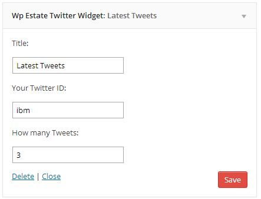
WP Estate Flickr Box
In this widget you must type your flickr username and choose the number of images you'd like to display.
Advanced Search Widget
The widget works same as Advanced Search in Google Maps (has the same fields).
. Results are filtered and show on the Advance Search custom template.
Zillow Widget
Please see chapter Zillow Estimate for all the details related to this feature.
Login Widget
In Front End - NEW in 1.06 users will need to agree to terms and conditions to register:
Starting v1.07 FORGOT PASSWORD is in the Login/Register Widget and in User Menu (enabled from Theme Options - Appearance)
Latest Listings widget (updated in v 1.031)
Featured Agent Widget
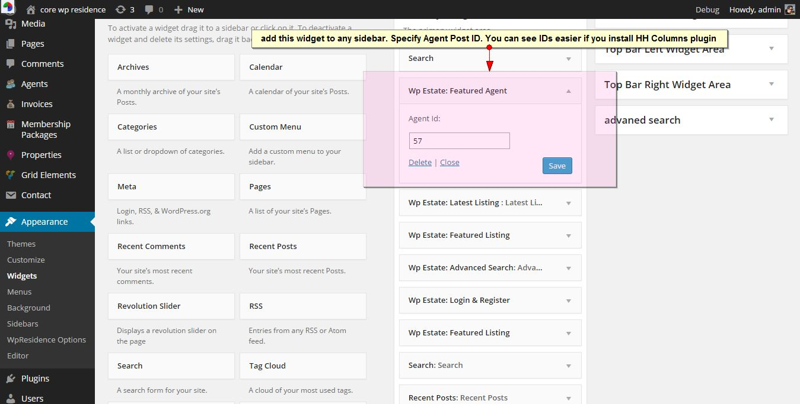
Header Widgets
You have two widgets positions (left and right)
In demo - we added a text widget on left with Font Awesome iconfor contact details and social widget on the right.
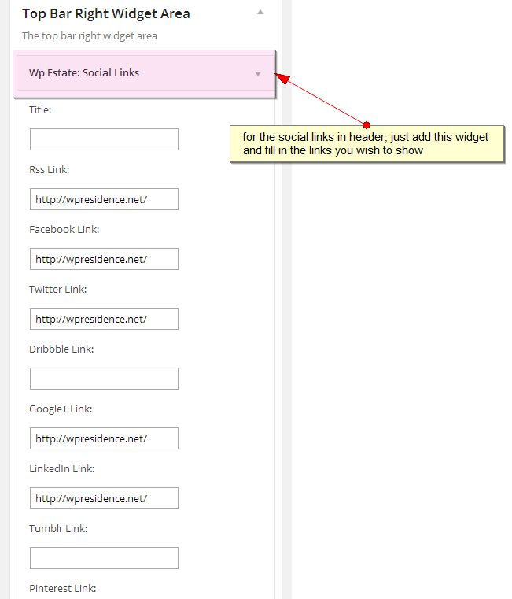
If you want to use the same contact widget and edit it with your info, copy paste each code below in a text widget, edit the info, and add it to header widgets.
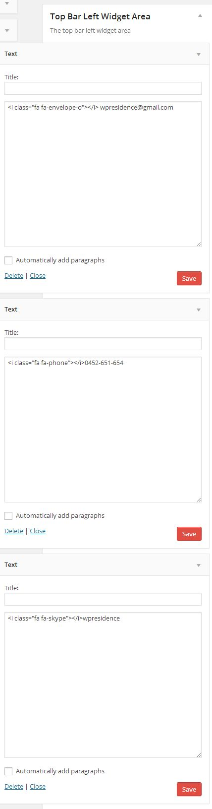
Footer Widgets
From Admin - Appearance - Widgets you can populate the footer 4 column widgets that are included in the default theme set-up. To add content to each column use drag and drop.
List of Cities is created with Text Widget - list style HTML and Font Awesome icons shortcode. This is a demo sample:
Theme Options
General Settings

Social & Contact

Facebook Login
Video Tutorial https://www.youtube.com/watch?v=j9m9pnU99Kg&list=PLEQZUYyA_PUktUczt5m8R4f2WMIE33pW3&index=12
For Facebook Login, you first need to create the Facebook APP. Follow these steps.
Login with Facebook - And go to APPs - ADD new APP.


Next to go Theme Options - Contact & Social and fill in the APP details:
Enable GMAIL (GOOGLE) Login
Video Tutorial https://www.youtube.com/watch?v=LKlB4Kxyw60&list=PLEQZUYyA_PUktUczt5m8R4f2WMIE33pW3&index=14
With recent updates, Google Login requires you create an APP.Follow these steps:
Login with your google account at https://console.developers.google.com
A. Create a project
B. Go to APIs and Auth
C. Create CLIENT ID
D. Create new Key
>NEW
E. Copy Details to Theme Options - Social & Contact
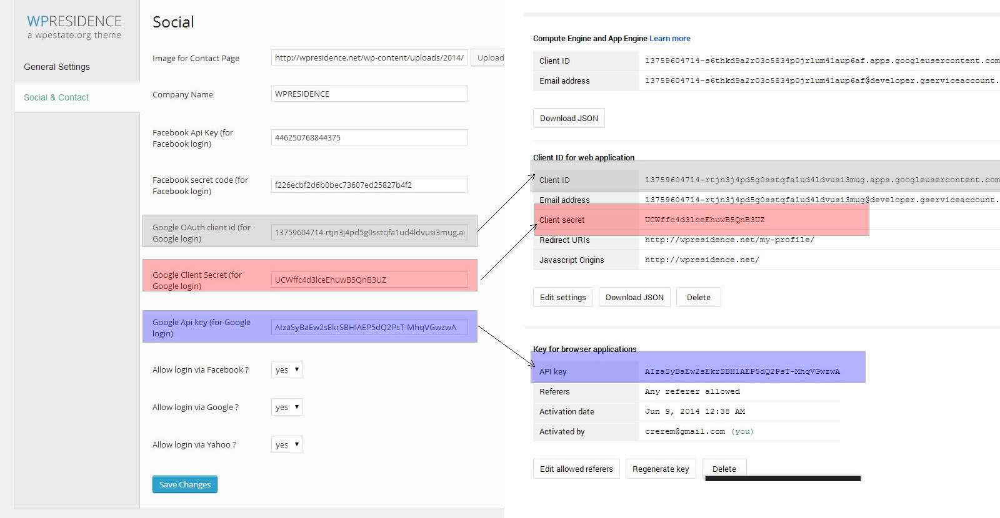
Appearance
Google Maps Settings
In Version 1.08 we added a new pin reading system to improve site speed for more than 200 properties on the map.. See this help video tutorial for more information for how this feature works - http://wpestate.org/wp-residence-v1-08-enable-pin-reading-system-file-theme-options/
With this option set to YES - the following settings apply:
a. Pins.txt file inside theme folder must have writing permissions (777 or 755). Read more on how to set permissions here - http://codex.wordpress.org/Changing_File_Permissions
b. Everytime you add new properties/pins you must click on the Generate Pins button
Other Google Maps settings:
NEW in v1.04
NEW in v1.09 - SSL option for google maps
Snazzy Maps - Custom Google Maps style - added in v 1.09
Go to https://snazzymaps.com/ https://snazzymaps.com/
Create/find a custom map you like.
And save.
Membership & Payment Settings
Video Tutorial to set-up PayPal - http://wpestate.org/wp-estate-paypal-settings/
Video Tutorial to set-up STRIPE - http://wpestate.org/wp-estatewp-residence-stripe-api-set/
Video Tutorial to add membership in Stripe - http://wpestate.org/wp-estatewp-residence-set-membership-package-stripe/http://wpestate.org/wp-estatewp-residence-set-membership-package-stripe/
Starting V 1.07 this page has been updated to request STRIPE info. You can also disable PayPal or Stripe
Added in v 1.09 - option to set expiration for each free listing in days
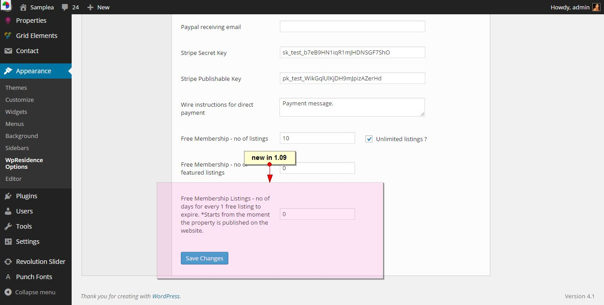
Added in v 1.09 - option to enable Wire Transfer option
PayPal Set-Up
Video Tutorial to set-up PayPal - http://wpestate.org/wp-estate-paypal-settings/
First, create this page with this custom page template.
First, login to create a PayPal Application at this URL https://developer.paypal.com/webapps/developer/applications/myapps.
Create the APP, add the PayPal Processor URL LINK from the theme.
Then copy the Client ID and Secret Key provided in Admin - Theme Options - Membership Settings.
VIDEO TUTORIAL: https://www.youtube.com/watch?v=7jHBKwzYHMs&index=3&list=PLEQZUYyA_PUlBRtzGjGaFg-ohs5aAb76F
Then create the second API.
FOR LIVE API - follow below steps at https://www.paypal.com/
FOR SANDBOX API - follow below steps at http://sandbox.paypal.com/
Make sure you have a BUSINESS account.

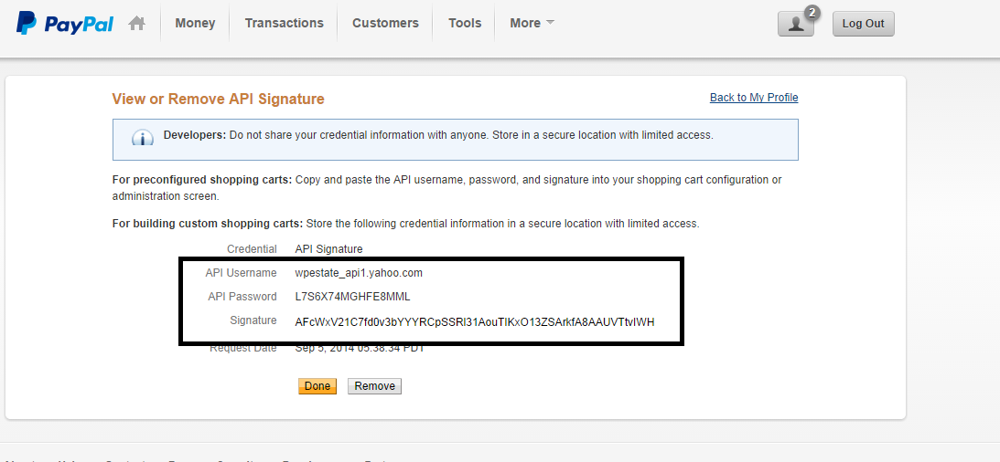
The information provided by PayPal must be added inTheme Options - Membership Settings as shown below:
Stripe Set-Up
Video Tutorial to set-up STRIPE - https://www.youtube.com/watch?v=R-GSqWPrIJY
Video Tutorial to add membership in Stripe - https://www.youtube.com/watch?v=LFHGM44okPY
Supported Countries - https://stripe.com/global
First, create and activate your STRIPE account at - https://stripe.com/
Then create a page with this custom template:

Use Live Credentials for LIVE payments. And TEST credentials for SANDBOX payments
For sandbox tests use Credit Card number: 4242 4242 4242 4242, any date in future, any CVS.
Copy Stripe Credentials in Admin - Membership and Settings.
FOR STRIPE and MEMBERSHIP activated you need to do below settings:
Wire Transfer
First enable the option from theme options:
Then fill in the information where you wish people to send the payment to:
On front end users will see a button "WIRE TRANSFER" next to PayPal or Stripe. When clicking on the button - the next step is to see a modal info box with Wire Instructions:
User will get the email which will include an ID (unique ref number for payment)
The email will include the INVOICE NUMBER generated in Admin. User will need to add that ID in payment info. Admin will look for the invoice by ID when he receives payment in his bank account.
Admin will activate the purchase by using EDIT INVOICE button
In Users - Edit Users you can check and confirm the user has received the package ID, listings included and featured included automatically.
The package will expire based on Memberhip Package expiration setting.
Wire Transfer does not work with the recurring option.
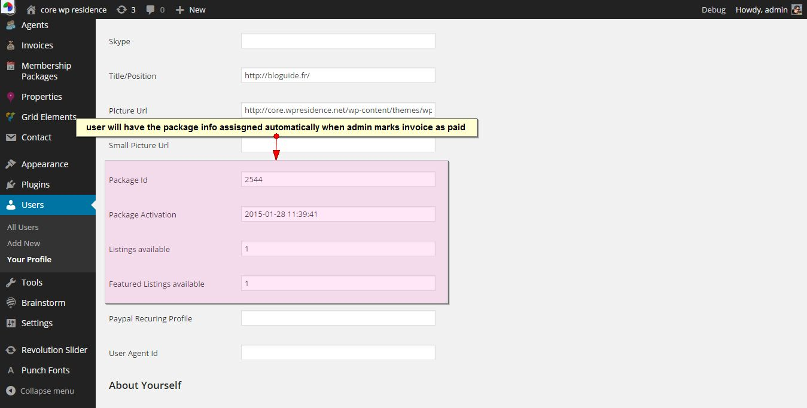
If you enable Paid Listing - User will be prompted to pay via WIRE TRANSFER for each listing.
Once Admin marks invoice as paid - property is published and owner is informed his property was published on the website
FREE SUBMISSION
First, enable this setting so people can receive their user and password when registering.
Then create the User Dashboard pages:
Make sure that the User Menu is enabled (it includes login & register options)
You can also create separate pages with Login and Register shortcodes.
PAID SUBMISSION
Decide from the beginning if you want to have PAID submission or Membership Packages.
Changing options on the way, after your users have already registered and sent listings, is not recommened as the theme doesn't count listings published / added before the switch.
Make sure that you've done all steps described in Membership & Payment Settings, Free Submission, PayPal settings, Stripe Settings or Wire Transfer.
Next set the price for the Paid Submission and currency:
Users will see the price and payment options in My Properties List- User Dashboard.
MEMBERSHIP SUBMISSION
Decide from the beginning if you want to have PAID submission or Membership Packages.
Changing options on the way, after your users have already registered and sent listings, is not recommened as the theme doesn't count listings published / added before the switch.
Consider also the following:
Each new account gets a free MEMBERSHIP at registration, with free listings included and free featured listings set by Admin.
New in v 1.09 - you can set the expiration date for each free listing.
Free Listing expiration considers the publish date + the number of days set in admin. User will ne informed about every free listing expiring via email.
A Paid Membership package includes: Name, payment cycle (day, week, month or year), payment cycle value (x days, x weeks and so on), listings included, featured listings included (deduct from total listings), package price and option to display package or not.
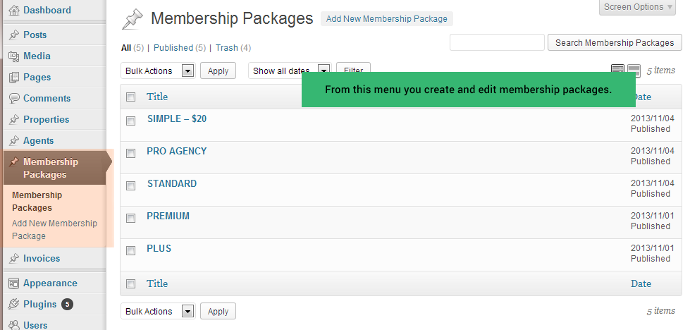Users see all packages in User Dashboard and can select to upgrade/downgrade package from the same page.
If a package is recurring, only user can cancel subscription in his PayPal account.
When user changes mebership, his old subscription is replaced with the new subscription instantly.
Even if deleted, listings are still counted in user's membership.
Users can choose to have a package recurring (the payment repeats every x day/week/month/year, as you've set for the package).
If user's package expires because he didn't renew or he doesn't have money in account, the package returns to FREE MEMBERSHIP by default.
All his listings will have status EXPIRED (expired listings won't show in listings). If user decides to renew package, he can re-submit EXPIRED listings for approval. He'll be able to re-submit only the number of listings allowed by his current package.
Design
Pins Management
Theme default pins are offered in the theme pack in .png format. You can edit these images with programs such as Fireworks.
When you edit/add default categories and actions, you'll need to upload new Pins.
When you create new categories, ALWAYS LET WORDPRESS CREATE THE SLUG (title and slugs must always match for search results).
This applies for CATEGORIES, ACTIONS, CITIES and AREAS you create.
Property Custom Fields
Property Theme Slider
Advanced Search Custom Fields
Video tutorial for Advanced Search type 1 - http://wpestate.org/wp-residence-set-advanced-searchadvanced-search-work/
Permalinks must be set to custom starting v 1.08 in order for the "Search" button to redirect to Advanced Search Results page.
Default Advanced Search Custom Fields options:
Add Features and Amenities in Advanced Search - in v1.04
How to add Price Slider to Advanced Search (new in 1.06)
Video Tutorial: http://wpestate.org/wp-residence-set-price-slider/
How to Add States/Cities in Advanced Search fields - Starting v 1.07
Video Tutorial: http://wpestate.org/wp-residence-1-07-manage-new-taxonomy-statecountry-3rd-dropdown/
New Options Added in v 1.09:
Search Types Options: Type 1 and Type 2.
NOTES ABOUT SEARCH TYPE 2:
- It does not work with search over map. You can only find results if you click the Search Properties button.
- When you arrive on Advanced Search Results page you see filters over maps synced with Advanced Search Custom Fields
Advanced Search - Enable Property ID (automatically created by WordPress)
- Starting v 1.07
This field will not work with search over map. It will display results only in Advanced Search Results page.
Video Tutorial:http://wpestate.org/wp-residence-1-07-add-advanced-search-property-unique-id/

Advanced Search - Enable Property ID (manually created by Admin or User)
First Remove the Automatic ID from front end - Property Page with this CSS.
#propertyid_display{
display:none;
}

Advanced Search not working?
IMPORTANT!
1. For search to work, custom taxonomies CITY, AREA, CATEGORY and ACTION must have title and slug match. Let WordPress create the slug for the new categories you add.
Add Pins and Icons after each slug edit from Admin - Theme Options - Pin Management.
2. If you choose custom search fields - check that you have set the Advanced Search fields comparison correctly. See above screenshot.
3. If the advanced search page doesn’t open like in demo, make sure you have the page with Advanced Search in the active pages. That is installed with the theme and should not be deleted. The page should have the Custom Page Template – Advanced Search Results.
4. Make sure Permalinks are set to custom
Listings Features and Amenities. Listings Labels
Features and Amenities. Add new features, separated by comma.
Edit, Delete or Add new features from the text editor.
When you add a new property status, you may require to add custom css for it, so that you can arrange text and choose background color. Custom CSS panel is in Theme Options - Design.
Video Tutorial for Property Status - http://wpestate.org/wp-residence-manage-property-status/
For example: you add status 'new offer' and 'hot offer'. This is the css code that you must as as well:
.ribbon-wrapper-hot-offer{
background: #FB6A5C;
}
.hot-offer{
font-size: 15px!important;
padding: 12px 30px;
color: #fff;
text-align: center;
margin: 0px auto;
}
.featured_property .hot-offer,
.property_listing .hot-offer {
font-size: 12px!important;
padding: 7px 0px;
}
.ribbon-wrapper-new-offer{
background: #FB6A5C;
}
.new-offer{
font-size: 15px!important;
padding: 12px 30px;
color: #fff;
text-align: center;
margin: 0px auto;
}
.featured_property .new-offer,
.property_listing .new-offer {
font-size: 12px!important;
padding: 7px 0px;
}
IMPORTANT: if you type the status with caps letters, the css must include the new names with the same caps letters.
8. Translation
You can translate WP Estate WordPress theme in any language with POEdit. To use this module follow these steps:
- 1. Download and install POEdit.
- 2. With POedit open the file wpresidence.po located in languages folder.
- 3. Translate the file using poedit and save the file with the proper name (for example de_DE.po). If the file name is not right the translation will not work. See this link for the proper name.
- 4. Upload the .po and . mo files in wp-content/themes/wpresidence/languages/ folder.
- ***5. Open wp-config.php (is in root folder of WordPress) and set the WPLANG prefix with your language name (same as the file name you just saved). Ex define(‘WPLANG’, ‘de_DE’);
***Based on this url:http://codex.wordpress.org/Installing_WordPress_in_Your_Language for WordPress v 4 and above - Change the language in the admin settings screen. Settings > general > Site Language.
New POEDIT instructions:https://make.wordpress.org/polyglots/handbook/tools/poedit/
Find your language code http://wpcentral.io/internationalization/
There are several items that you can edit in Theme Options (we left this easy to manage for any language). Please see below:
a. For Property Details, Property Features, Property Address – these labels are managed from Admin – Theme Options – Listing labels. Please see this help http://help.wpresidence.net/#!/editsettings
b. For Property Features & Amenities – please go and edit them in Admin – Theme Options – Listing Custom Fields –http://help.wpresidence.net/#!/editsettings
c. For Property Fields – custom fields – please go to Listing Custom Fields – http://help.wpresidence.net/#!/customfields
NOTE: Some default properties fields are managed from POEDIT (Address fields, Bedrooms, Rooms, Bathrooms, Size, Property Size). The rest are managed from admin.
d. For Advanced Search labels – custom fields, managed from Options – Advanced Search http://help.wpresidence.net/#!/advsearchfields
Note 1: If you don’t have custom advanced search enabled, all fields are translated in POEDIT.
Note 2: Dropdowns (All Cities, All Areas, All Types, All Listings – are managed only from POEDIT).
9. dsIDXpress WordPress Plugin compatibility & other IDX plugins
Also, you must add 1 property in Admin - Properties - and pin it on the map for the properties in the IDX LISTINGS widget to show.
http://wordpress.org/plugins/dsidxpress/ plugin must be installed separately and it requires and account and monthly fee to be used.
WP Estate offers custom support for the following:
- WP Estate lists dsIDXpress Listings in the header map, same as we do with the properties you add in this theme’s wp-admin.* (see limitation below)
- You can change the pin for dsIDXpress Listings in wp-admin
- We’ve built custom CSS for 4 dsIDXpress sidebar widgets: IDX Areas, IDX Search, IDX single Listing, IDX listings.
- We’ve built custom CSS for the following shortcodes: Insert Single Listing from MLS data (by dsIDXpress) & Insert Listings from MLS data (by dsIDXpress)
- We’ve built custom CSS for some pages (imported from dsIDXpress)
Limitations imposed by dsIDXpress plugin developers:
- *dsIDXpress listings show on the header map ONLY when IDX Listing widget is listed on the sidebar, as we showcase on this page. This widget can show only 50 properties at one time, so only 50 IDX properties can show on the header map.
NOTE: You can create different sidebars with a different IDX Listing widget to show up to 50 listings on the map for different pages.
- Advanced Search doesn’t apply to dsIDXpress listings.
- Google Maps filters don’t apply to dsIDXpress listings.
- Agent page does not show listings by Agent MLS ID number after the contact form.
Documentation links: http://wordpress.org/plugins/dsidxpress/ and http://www.dsidxpress.com/
10. Revolution Slider - third party plugin ($18 value)
We've included the awesome Revolution Slider in this Theme. For more information about how the plugin works, we've also included the documentation from the original author (see folder RevolutionSlider) or click here http://themepunch.com/codecanyon/revolution_wp/documentation/
WPML Help
(*this plugin is not included, but it's compatible with our theme)
WPML is a third party plugin. You can use this to create a multi-language website. The theme has been tested by WPML officially. These are instructions meant to help you set-up the plugins needed and translate the theme. The plugins may have extra settings. We kindly ask you to contact them for further support - http://wpml.org/forums/forum/english-support/
Link to WPML public test site for that theme: http://theme-testing.wpml.org/wpresidence/
What is needed to run these two softwares
WPML Multilingual CMS – http://wpml.org/purchase/
and
WPML Media
WPML String Translation
WPML Translation Management
Getting started section: Installing & activating both WPML & the theme / plugin
- WPML getting started guide http://wpml.org/documentation/getting-started-guide/
How to set and translate main features of the theme / plugin:
- Using translation management http://wpml.org/documentation/translating-your-contents/using-the-translation-editor/
-
Translation Management & Features –http://wpml.org/documentation/translating-your-contents/using-the-translation-editor/translation-management-features/
- Translating URL slugs –http://wpml.org/documentation/getting-started-guide/translating-page-slugs/
Screenshots from WP RESIDENCE:
How to translate custom Taxonomies
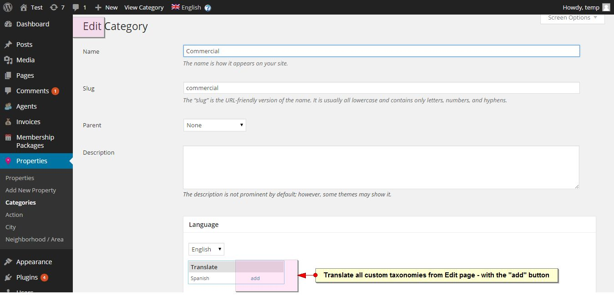
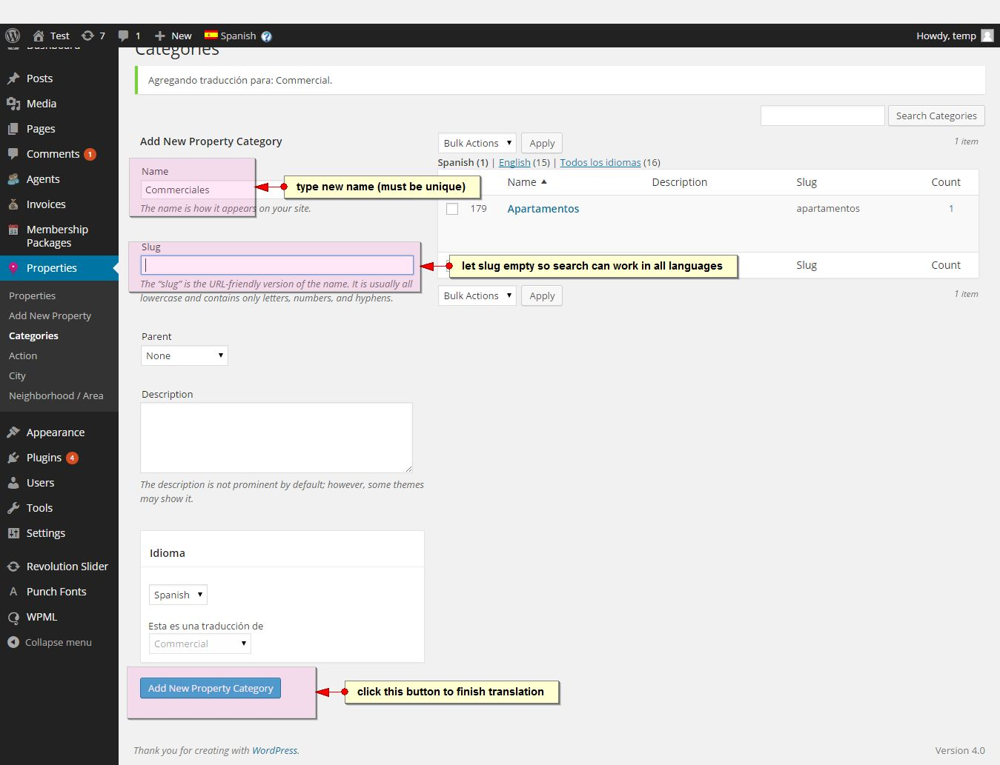

How to edit the translation of custom Taxonomies
How to add property Google Maps Pins to all languages
How to Set-up WPML media so your images are translated when you'll start translating properties
How to translate custom fields you add in Theme Options - Property Details, Property labels in Advanced Search, Property Fields Labels, Property Features and Amenities
For this you'll use STRING TRANSLATION plugin. See below WPML references
- How to scan strings coming from the theme / plugin –http://wpml.org/documentation/getting-started-guide/theme-localization/
- How to translate strings using String Translation –http://wpml.org/documentation/getting-started-guide/string-translation/
Screenshots from WP RESIDENCE

How to Translate a property with WPML, after you have done the above steps
How to Translate a property blog posts
How to Translate a page
WPML help for Visual Composer translation: http://wpml.org/2014/06/use-visual-composers-page-builders-wpml/
How to Translate Agent Post
How to Translate Widgets
The only widget that needs translation is Featured Property widget since WPML creates a unique ID for translations. For this widget we recommend to use WPML Widget plugin to display the Featured Property widget based on the property ID in each translation. The rest Widgets text translate with POEDIT for each language as those are default texts.
Contact Widget details are translated from String Translation.
WPML language switcher settings
H) Change Log
February 10, 2015 - Release 1.091
- NEW: Ultimate Addons for Visual Composer - free plugin included ($17 value included in theme price)
- NEW: Color for hover menu in Design options
- EDIT: main color applies for a few elements that were not included before this update
- EDIT: Title control yes/no for Properties List half map
- EDIT: Update on how search type 2 works with advanced search results filters
- EDIT: Small CSS edits for search type 2 backrground with no features and amenities enabled in search
- EDIT: limit memory resources needed for Generating Pins button with 2k + properties listed
- FIX: JS update for long titles trimmed in infobox over map (non latin characters)
- FIX: Compare on Properties List half map
- FIX: CSS for properties list half map with no header widget
January 27, 2015 - Release 1.09
- NEW: Expiration set for Free Membership Listing
- NEW: Option to pay via Wire Transfer for Paid Listing and Membership Package
- NEW: Advanced Search type 2 - with auto-complete for city, state and area. More options included
- NEW: Snazzy Maps style for Google Maps (style the map as you wish)
- NEW: Properties List - Half Map + Half Properties style
- NEW: Contact 7 for Agent Contact and Contact Page contact forms.
- NEW: Zip check on Stripe Payment form for security
- NEW: States are dropdowns in submission if you choose the submission form with dropdowns for city, area and state
- NEW: Property Page Layout 2 - with Agent info and Agent Contact form on sidebar (left or right)
- NEW: New information in Admin - Properties List (Featured YES/NO, Price)
- NEW: Default message on Properties List page if no properties are listed yet.
- NEW: Load Maps over SSL option in Admin (for websites that install SSL)
- EDIT: Featured Property widget link on entire image.
- EDIT: Added back to top on mobile as well.
- EDIT: Disable maps scroll on click. Now only the buttons + and - work for zoom.
- EDIT: Removed JS code for transforming callto: to tel: so that numbers open on chrome browser, mobile
- EDIT: Removed " in Taxonomy page for category name
- EDIT: All titles are trimmed to a number of characters so that long titles do not disrupt theme design.
- FIX: Submit Page - Auto-Complete not resetting Area and Zip if user tries a different Address.
- FIX: Recent Items Slider - scroll set to 0 not applying.
- FIX: CSS for Reset Password message
- FIX: When using share in lists, the property was opening in background.
- FIX: Mortgage calculator not considering decimals
- FIX: Duplicate empty sub-categories
- FIX: Pagination for taxonomy pages not applying from Theme Options - but from WordPress settings.
- Plugin update: Visual Composer updated to 4.4.1 version
- Translate: Added the Reset Password subject
December 21, 2014 - Release 1.08
- NEW: Added in Theme Options - General Settings the option to select the front end submission form without google maps auto-complete for address, city and area. This will activate the previous submission form with dropdowns, controlled by admin.
- NEW: Google Maps Pin reading system from FILE for people with over 200 pins. This will improve loading speed for people with thousands of listings.
- NOTE: with this on, Google Maps will display all properties in header google maps on Agent Page profile with header google maps and on Taxonomy Pages.
- NEW: Advanced Search URL is created dynamically based on searched parameters values.
- NEW: Advanced Search paramters are saved the Advanced Search on header Google Maps on the advanced search results page.4
- NEW: Advanced Search Results SORT filters (Price High to Low and Price Low to High) + List view option as 2nd option.
- NEW: Recent Items shortcode order RANDOM option (yes/no)
- NEW: Recent Items shortcode can filter now Articles by Category ID.
- NEW: Featured Agent shortcode added in custom widgets list.
- NEW: Recent Items slider has now time in 1000 (1 seconds), 2000 (2 seconds) and so on. All previous slider must be updated.
- EDIT: Agent Profile page shows all properties assigned to him in header map (*applies for the default pin reading system)
- EDIT: Facebook share url takes an image from property gallery (*Facebook cache may need you to refresh the page once to see the image shared)
- EDIT: Added text note in My Profile page - Change Password.
- FIX: Mobile - Chrome closed mobile menu when scroling down the menu.
- FIX: Hide Features and Amenities title on property page if there are no features and amenities added in theme options.
- FIX: Added click entire property unit when using AJAX filters (before it was only on the unit title and + sign on hover)
- FIX: Contact form Address with ' saved with '/. Now it saves only the '.
November 17, 2014 - Release 1.07
- NEW: STRIPE Merchant for payments (Paid Listing and Membership)
- NEW: Submission Form Address changed to Auto-complete from Google Maps.
- NEW: City, Area - in submission form, changed to text fields (which can be pre-populated from address auto-complete, or manually by users).
- NEW: Area is attached to City in submission form automatically on property save.
- NEW: Added 1 new taxonomy for State/County. Removed State and County as text default fields (NOTE: if you have an older theme version and you filled in these details, after upgrade these fields will no long show). State/County taxonomy is independent from other taxonomies (City, Neighborhood)
- NEW: Property ID (automatically added by WordPress) shows in Property Details automatically. Property unique ID can be used in Advanced Search. Who doesn't wish this field, it can be removed with CSS.
- NEW: Forgot Password in User Menu (header) and Login/Register widget
- NEW: Added Fonts Subsets option in Admin - Theme Options
- NEW: Add Floor Plans button in Submission Form - Edit Property form.
- NEW: Autoscroll option for Recent Items Slider
- NEW: Search with auto-complete for My Properties list (in user dashboard)
- NEW: Pretty Photo for Floor Plan image in property page.
- EDIT: Floor Plans, no image resize rule so images are not cut.
- EDIT: Floor plans, if details are not filled in they don't show.
- EDIT: POEDIT updates for Price from - to, Listing Media and a few more.
- EDIT: Added all available language .po from clients in demo_content folder.
- FIX: Print Property Address title showing as "Property Address" not as "Property Details"
- FIX: Taxonomy Page header was saving from first property header (not global header). Now it's from Global Header
- FIX: Properties submitted and published without admin approval did not show in Recent Items shortcode and Taxonomy list.
- FIX: Theme Slider on front end showed max 10 listings. Now this limit is removed.
October 27, 2014 - Release 1.061
-FIX: price slider changes currency to $ on slide.
October 22, 2014 - Release 1.06
- - NEW Price slider for minim and maxim price in Advanced Search. Works with YES/NO option. Applies for default and custom Advanced Search fields. Work with Search AJAX over Map as well.
- - NEW Add Floor Plans for properties in Admin and in Submit Property form
- - NEW Print Listing button in Property Page next to Social Share icons
- - NEW Attach PDF to property in Admin and Front End Submission form
- - NEW Agree to Terms and Conditions check and page template before registering (in all register options)
- - NEW Assign property to register user from admin - Edit Property
- - NEW: support jpeg files format in user dashboard - submit page
- - NEW My Agent page pagination for My Properties
- - EDIT Added bigger zoom for Google search over map
- - Revolution Slider update to 4.6.3
- - FIX: Edit property removes featured status
- - FIX: Recent Items Slider text alignment in IE
- - FIX: don't send send saved search email alerts on save in admin theme options
- - FIX: right post navigation arrow opening a different post
- - FIX Twitter share link no extra space
- - FIX Favorites Link in User Menu when first logging in
September 9, 2014 - Release 1.05
- - NEW: Saved Search + Email Alert based on Saved Search parameters. How it works -
- - NEW: Spiderfy for pins in the same location on Google Maps
- - NEW: Sub-categories in Advanced Search, Advanced Search shortcode and Advanced Search widget for custom taxonomies (City, Area, Type, Category)
- - NEW: Number of properties listed for each category and sub-category listed under custom taxonomies.
- - NEW: Sidebar Settings from Theme Options apply for default front end submission properties sidebar settings.
- - NEW: pagination for My Properties list in user dashboard.
- - EDIT: Recent Items Slider shortcode has navigation arrows on top.
- - EDIT: link on the entire Featured Property box
- - EDIT: remove noreply@wpresidence from notifications. Now it's noreply@yourdomain.com
- - EDIT: Your Message shows in contact box all time (not just on click)
- - EDIT: responsive design for testimonials
- - EDIT: Visual Composer v4.3.3 update
- - EDIT: Rev Slider v6.0 update
- - FIX: Latest Listings widget order by date
- - FIX: Responsive for Blog list with sidebar when manually resizing browser. Responsive for Property List layout.
August 6, 2014 - Release 1.04
- NEW: Search by Features and Amenities with on/off control in Advanced Search Settings. Admin manages what features and amenities.
- NEW: Recent Properties Slider shortcode (filter properties as you wish). Includes option to show just Featured Properties.
- NEW: Created a custom class to have full Width Container for Visual Composer row settings. Class is full_container_over
- NEW: Google Maps Search address with on/off control in Google Maps Settings
- EDIT: Added option for Featured Properties only in Recent Items shortcode.
- NEW: Breadcrumbs for parent pages.
- EDIT: Replaced noreply@wpestate.org from 2 places with noreply@yourdomainname
- EDIT: added new small colors to Main Color, if custom colors are enabled.
July 21, 2014 - Release 1.03
- NEW: Latest Listings widget updated with filters by City, Area, Category, Type, Featured YES or NOT.
- NOTE: after update, you will have to go to Widgets and select the filter options (or a warning error will show above the widget)
- NEW: Receive duplicate emails for all contact forms messages sent to agents/users on property and agent contact forms. The email address that receives duplicates is set in Admin - Theme Options - Social & Contact.
- NEW: Checkboxk to delete all AREAS in Admin - Areas.
- NEW: Default agent image added in Agent List page.
- EDIT: pagination on Advanced Search keeps search parameters on page 2.
- EDIT: If no features and amenities are checked, the section for this doesn't show.
- EDIT: Similar Posts, link on the entire thumb,
- FIX: Save pins for non-latin slugs
- FIX: Advacned Search AJAX filters for less than 3 / 4 spots filled in.
- FIX: Filter City by Area in Advanced Search widget, Advanced Search custom fields set to yes.
July 9, 2014 - release v 1.03
- NEW: WPML functions for custom fields
- NEW: Fax input in contact page.
- EDIT: If Advanced Search is set to No (to not display), it is removed from responsive mode as well
- EDIT: Active and Hover main menu colors are taken from Main Color, if Custom Colors are activated
- UPDATE: Filter Area by City for Mac Safari, Chrome and Windows IE
- UPDATE: Properties List filters for non latin languages.
- UPDATE: Ajax Filters, Area - includes ALL AREAS option.
- UPDATE: Infobox lists titles, not slugs
- UPDATE: AJAX FILTERS work if there are no actions or no categories set.
- UPDATE: Added default agent image if no image is set.
- FIX: "My Listings" opens only in new page.
- FIX: Submission form if there are 0 custom fields for property.
- FIX: Excerpt not showing for properties added in admin.
- FIX: Advanced Search Fields - bathrooms, min and max price at the same time.
- FIX: Properties List pagination if Properties List template is set on Homepage.
June 29 2014 - release v 1.02
- NEW: Option NONE for Action and Category in front end submission.
- NEW: Zoom control on the map showing with the property slider.
- NEW: Close Street View button on header map in property page.
- EDIT: Contact Email on Property Page includes the property page link in email content.
- EDIT: Similar Listings are by Category, Action and City.
- EDIT: Categories and Actions in front end submission ordered alphabetically.
- EDIT: Area filters by City in front end submission form.
- EDIT: User/Agent email is added automatically to the property contact form.
- EDIT: Advanced Search results order (featured first, publish date descending next)
- EDIT: Optimized some core css images
- EDIT: Property filters showing slug, not title
- EDIT: Front End submission text updates.
- EDIT: Compare classes added to compare page elements.
- EDIT: Advanced Search title shows all results found, not just those on first page.
- EDIT: If rooms, bathrooms or size have no value, they don't show in infobox and property unit list.
- EDIT: POEDIT translation with missing terms.
- EDIT: Compare option clicked for the same property does not duplicate compared item, if it's the same.
- FIX: Ipad vertical view, submission login disappearing on click.
- FIX: Register shortcode and widget error.
- FIX: Property custom titles not supporting ' in title.
- FIX: Make Featured option in User Dashboard, My Properties
- FIX: Features and Amenities, Custom Property Fields not saving for properties when Caps letters or non latin characters are added.
- FIX: Added "MESSAGE SENT" notifications on contact forms, fixed no contact on user form.
- FIX: small CSS alignments
I) Support & Custom Work
- If you discover a bug please report it via my profile page on Mojo Themes or at annapx0909@gmail.com. We will release a fix ASAP.
- If you have any questions regarding this theme please use the comments section on theme page or email us at annapx0909@gmail.com
- For any custom work on WP Estate please contact me via profile page or at annapx0909@gmail.com. You will receive a free estimate
- Keep watching our change log. We will release new features on this theme!
Once again, thank you so much for purchasing this theme. As I said at the beginning, I'd be glad to help you if you have any questions relating to this theme.
WPESTATE.ORG
Once again, thank you so much for purchasing this theme. As I said at the beginning, I'd be glad to help you if you have any questions relating to this theme.
WPESTATE.ORG